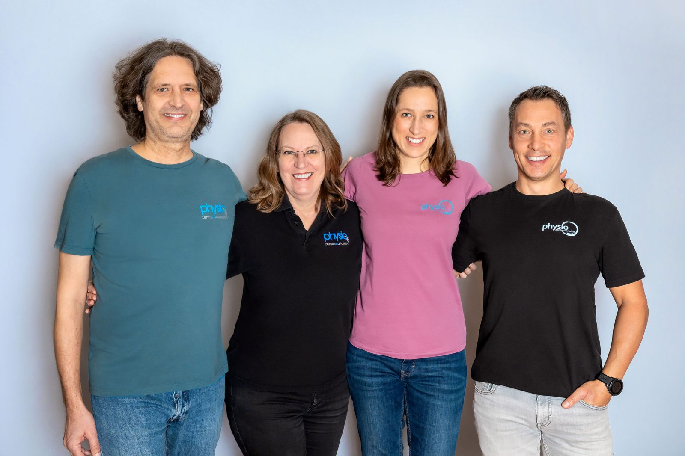
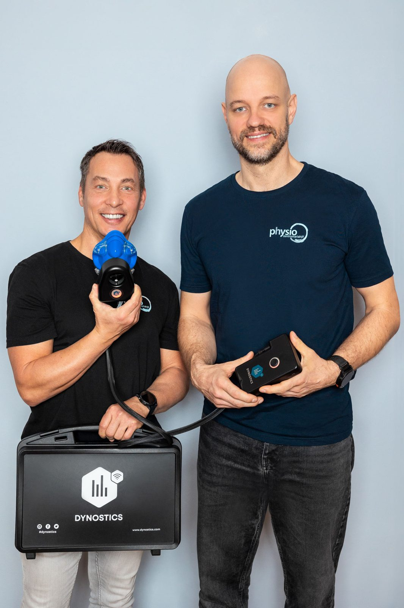

Osteopathie
Ersttermin 60 Minuten, Folgetermin 45 Minuten.
Therapien
Zehn Therapieformen, alle am selben Standort. Jede Beschreibung nennt Ablauf, Dauer und die Person im Haus, die den Bereich verantwortet.
Bewegungsapparat
Physiotherapie beinhaltet vielseitige Konzepte und Teilbereiche. Im Wesentlichen besteht sie aus aktiven und passiven Therapiemethoden, um Einschränkungen zu vermeiden oder wiederherzustellen.
Ziel ist die Wiederherstellung eines ökonomischen Bewegungsverhaltens. Durch die Analyse von Fehlhaltungen der Statik und von Funktionsstörungen der Muskeln und Gelenke stellen wir die passende Therapie zusammen. Die Schulung des Gefühls für den eigenen Körper – Körperwahrnehmung – ist dabei ein entscheidender Baustein.
Aktive Techniken zur Verbesserung von Kraft, Stabilität und Beweglichkeit mit Anleitung zu Eigenübungen fließen ebenso ein wie passive Mobilisationstechniken für Gelenke und Muskeln.
Tarif: 30 Min. 65 €–70 € · 45 Min. 95 €–100 € · 60 Min. 120 €–130 €. Wahltherapie – keine direkte Kassenabrechnung.

Wirbelsäule
Eine Skoliose ist eine seitliche Verbiegung der Wirbelsäule und mit einer Deformierung und gleichzeitigen Verdrehung der Wirbelkörper verbunden. Durch die Rotation entsteht auf der Konvexseite der Krümmung der sogenannte Rippenbuckel, auf der Konkavseite das Rippental.
Skoliose braucht eine individuell auf Art und Grad der Krümmung abgestimmte Therapie. Um Aufrichtung, Stabilisierung und Schmerzfreiheit zu erreichen, bieten wir neben der klassischen Skoliosetherapie nach Schroth ein erweitertes Therapieprogramm an.
Diese physiotherapeutische Technik umfasst die gezielte dreidimensionale Stimulierung der asymmetrischen Wirbelsäulenmuskulatur. Erlernt werden Übungen zum Ausgleich der Krümmung mit Anleitung und Erarbeitung eines individuellen Übungsprogrammes. Ein wichtiger Bestandteil ist die sogenannte Drehwinkelatmung, eine gezielte Atemtherapie. Durch manuelle Techniken können Einschränkungen mobilisiert und Schmerzpunkte entspannt werden.
Im Haus: Marion Buresch-Neuhold (Skoliosetherapeutin nach Schroth).
Aktive Therapie
Eine Therapieform, die den ganzen Körper auf motorischer und kognitiver Ebene fordert. Deshalb wird sie in allen therapeutischen Bereichen eingesetzt: Neurologie, Pädiatrie, Chirurgie, Orthopädie, Geriatrie und Innere Medizin.
Vom Fuß aufwärts
Die Einlegesohlen der propriozeptiven Podotherapie helfen, durch gezielte Stimulation von Fußmuskeln Fehlstellungen und Verspannungen an Fuß, Wirbelsäule und im ganzen Körper zu verändern. Ziel ist eine gesunde Körperstatik und dadurch Schmerzfreiheit. Schmerzen im Bewegungsapparat werden oft durch Fußfehlstellungen hervorgerufen – von Fuß- oder Kniebeschwerden bis zu chronischen Nacken- oder Rückenschmerzen.
Beurteilt werden die Füße sowie Statik und Dynamik von Beinen, Becken und Wirbelsäule. Mit dem Podographen – einer Art Stempelkissen – entstehen statische und dynamische Fußabdrücke, das individuelle Gangbild wird analysiert. Mit dem Podoskop, einem Fußspiegel, werden Belastungspunkte und ihre Verteilungsmuster dargestellt. Mittels kleiner, dünner Korkplättchen werden die identifizierten Stellen gezielt unterlagert – die Belastung verändert sich sofort sichtbar.
In den ersten zwölf Wochen so oft wie möglich. Danach bieten wir eine Nachkontrolle an, in der erste Erfolge sichtbar werden und die Einlagen neu angepasst werden können. Weitere Nachkontrollen vereinbaren wir individuell.
Im Haus: Sabine Perkonig und Florian Pichler.
Ganzheitlich
Die Osteopathie ist eine ganzheitliche manuelle Behandlungsmethode, die auf medizinisch-wissenschaftlichen Erkenntnissen beruht. Ihr Ziel ist die Wiederherstellung der körperlichen Funktionsfähigkeit bei Blockaden und Einschränkungen des Gewebes – die Gesundheit des Menschen liegt im Gleichgewicht der Systeme.
Ersttermin 60 Minuten, Folgetermin 45 Minuten.
Generelle passive osteopathische Behandlung mit dem Ziel eines Feintunings des Körpers, bevor Strukturen oder Systeme aus dem Gleichgewicht geraten. Zum Einsatz kommen Techniken für Bewegungsapparat, Organsystem und Nervensystem.
Mikronährstofftherapie und Regulationsmedizin: Ersttermin 90 Minuten, Folgetermin 45 Minuten.
Eine stabile Gesundheit und hohe Vitalität bis ins Alter benötigt als Grundlage eine optimale Versorgung mit allen Nährstoffen. Je besser die einzelnen Zellen genährt sind, desto besser funktionieren Stoffwechselvorgänge, Muskelphysiologie, Knochen- und Knorpelstoffwechsel und kognitive Hirnleistungen.
Unzureichende Ernährung auf der einen Seite – verarbeitete Nahrungsmittel, einseitige Ernährung – und erhöhter Bedarf in bestimmten Lebenssituationen wie Stress, Schwangerschaft, chronische Krankheiten, Medikamenteneinnahme oder Altern lassen erkennen, dass der Mikronährstoffhaushalt latente Mängel haben kann.
Die präventive Osteopathie erfasst die körperlichen Optimierungs- und Schlüsselstellen; in Mikronährstofftherapie und Regulationsmedizin werden Mängel erfasst, unter anderem in Kooperation mit Ärzt:innen und anhand von Blutbefunden. Mit gezieltem Auffüllen der Speicher wird der Organismus von der Zelle heraus ausgeglichen.
Rückerstattung: Kosten für osteopathische Behandlungen werden bislang nicht von Krankenkassen übernommen, wohl aber von privaten Zusatzversicherungen.
Ersttermin 60 Min. · Folgetermin 45 Min.
Kinder sind keine kleinen Erwachsenen. Sie benötigen eine besonders empfindsame Behandlungsweise, um sie in ihrer Entwicklung zu unterstützen. Die Kinderosteopathie ist eine Spezialisierung innerhalb der Osteopathie. Von der Geburt bis zur Pubertät durchlaufen Kinder unzählige Entwicklungsschübe auf motorischer, neurologischer, kognitiver, sensorischer und emotionaler Ebene.
Körperliche Spannungen können etwa durch die intrauterine Lage, den Geburtsvorgang oder einen Kaiserschnitt entstehen und den physiologischen Entwicklungsprozess irritieren. Dr. Viola Fryman, Pionierin der craniosacralen Osteopathie, und Kolleg:innen fanden in einer Studie mit 1.250 untersuchten Säuglingen bei 80 % keine optimale Beweglichkeit der Schädelknochen.
Sanft und einfühlsam werden myofasziale und biomechanische Dysfunktionen mit den Händen gelöst, um das Gesundheitspotenzial zu steigern und die Selbstregulationskräfte zu aktivieren.
Kinderosteopathin: Marion Buresch-Neuhold. Kinderphysiotherapie: Christina Kaufmann.

Computergestützt
Der Spineliner® ist eine computergestützte Reflextherapie für Analyse und Therapie des Bewegungsapparates. Der grundlegende Vorteil dieser Methode ist die Ermittlung von Eigenfrequenzen des Bewegungsapparates. Diese am Display grafisch dargestellten Eigenfrequenzen – etwa von Wirbelsäulensegmenten oder der Muskulatur – unterstützen Manualtherapeut:innen bei der Diagnose.
Während der Behandlung wird die funktionsgestörte Struktur entsprechend der ermittelten Eigenfrequenz in Schwingung versetzt. Die Wirkung lässt sich in Echtzeit am Display verfolgen; die Behandlung stoppt automatisch, sobald der Resonanzzustand erreicht ist. Umgehend stellt sich eine deutliche Funktionsverbesserung und Schmerzreduktion ein – bei eingeschränkten Wirbelsäulensegmenten ebenso wie bei verspannter Muskulatur.
In einem zweiten Untersuchungsgang wird der neue Status ermittelt. Dieser objektive Vergleich wird präsentiert und steht auch zu Dokumentationszwecken zur Verfügung. Als evidenzbasierte Behandlungsmethode findet der Spineliner® auch im Leistungssport Anwendung.
Im Haus: Florian Pichler.
Manuelle Anwendungen
Ob Shiatsu – Berührung, die bewegt – oder eine der zahlreichen Techniken der Heilmassage: Wir bieten eine umfassende Auswahl an manuellen Anwendungen zur Unterstützung Ihres Wohlbefindens und auch Ihres Heilungsprozesses.
Am bekanntesten ist die klassische Heilmassage bei Verspannungen der Rücken-, Nacken- und Schultermuskulatur oder bei Sportler:innen zur Lockerung der Beine nach sportlichen Anstrengungen. Darüber hinaus bieten wir zahlreiche Spezialtechniken an.
Im Haus: Walter Kaspar (Heilmasseur / gewerblicher Masseur), Romana Frank (Heilmasseurin, gewerbliche Masseurin), Peter Rommer (Sportmasseur, Sporttherapeut).
Berührung, die bewegt
Shiatsu ist eine manuelle Körperarbeit mit fernöstlichem Hintergrund. Das Ziel von Shiatsu ist das ungehinderte Fließen der Energie (japanisch Ki). Shiatsu wirkt unterstützend, reguliert den Fluss der Energie, unterstützt die Gesundheit und wirkt vorbeugend gegen Störungen und Erkrankungen.
Seine Geschichte lässt sich bis ins alte China des sechsten Jahrhunderts v. Chr. zurückverfolgen. Den früheren chinesischen „Barfußärzten“ waren aus praktischer Erfahrung bestimmte Stellen am menschlichen Körper bekannt, die empfindlich reagierten, wenn Krankheiten auftraten oder Lebensfunktionen beeinträchtigt waren. Diese Stellen, heute als Akupunkturpunkte bekannt, stimulierten sie mit ihren Händen.
Vor etwa tausend Jahren brachten chinesische Ärzte ihre Kunst nach Japan. Anfang des 20. Jahrhunderts entwickelte sich Shiatsu aus der japanischen Massage Anma weiter. Gemäß dem traditionellen Erfahrungswissen wird der Mensch als Einheit von Körper, Geist und Seele verstanden, bestimmt von der Energie, die entlang der Meridiane fließt.
Shiatsu findet in den letzten Jahrzehnten auch in Europa immer mehr Eingang im medizinischen Bereich und wird zur Vorbeugung von Krankheitsursachen und bei chronischen Beschwerden eingesetzt. Die Selbstheilungskräfte werden angeregt und gestärkt; neben der körperlich entspannenden Wirkung kann es auch zu einer beruhigenden Wirkung auf emotionaler Ebene kommen.
Shiatsu wird in ruhigen, fließenden Bewegungen auf einer weichen Matte am Boden ausgeübt: Der Praktiker übt mit Handballen, Daumen, Ellbogen und Knien sanften Druck aus, arbeitet achtsam, präsent und nur mit seinem entspannten Körpergewicht.
Im Haus: Susanne Schiller (Qualified Practitioner, Trainer / Teacher).
Nach Terminvereinbarung
Im Physiozentrum Mariahilf gibt es die Möglichkeit, im Rahmen eines Coachings eine individuelle Beratung in Anspruch zu nehmen.
Was braucht Ihr Körper noch? Eine stabile Gesundheit und hohe Vitalität bis ins Alter benötigt als Grundlage eine optimale Versorgung mit allen Nährstoffen. Erhöhter Bedarf in bestimmten Lebenssituationen und einseitige Ernährung führen zu latenten Mängeln.
Wie können Sie Teufelskreise durchbrechen? Sichtung der für den Schmerz bestimmenden Einflussfaktoren, moderne Schmerzverarbeitungstechniken zum besseren Selbstmanagement, Definition der körperlichen Optionen sowie Bewältigungsstrategien und Kompromissmöglichkeiten.
Was sollte sich im Verhalten ändern? Falsche Prioritäten oder eine übertriebene Form der Umsetzung von Gesundheitsaktivitäten können Lust, Geld und vor allem Lebenszeit rauben. Wir suchen gemeinsam die für Sie passenden Aktivitäten und Einstellungen.